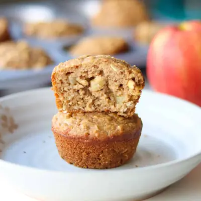

Apple Oatmeal Muffins

Ingredients
- 1 cup unsweetened applesauce (260g)
- 1/2 cup whole milk (or milk of choice)
- 1 cup rolled oats (100g)
- 2 eggs
- 3 tablespoons melted butter (or oil)
- 1/3 cup maple syrup
- 1 teaspoon vanilla extract
- 1 cup all purpose flour (125g)
- 1 teaspoon baking powder
- 1/2 teaspoon baking soda
- 1 teaspoon cinnamon
- 1/2 teaspoon salt
- 1 cup chopped apples (1/4 inch pieces)
Steps
- Preheat oven to 375°F (190°C). Line a 12-cup muffin tin with liners or lightly grease it.
- Soften oats: In a large bowl, whisk together the milk and applesauce. Stir in the oats and let sit for 10–15 minutes so they soften.
- Add wet ingredients: Once oats are softened, whisk in the melted butter, eggs, maple syrup, and vanilla until well combined.
- Mix dry ingredients: In a small bowl, whisk together the flour, baking powder, baking soda, salt, and cinnamon.
- Combine: Add the dry ingredients to the wet mixture. Gently stir until just combined—don’t overmix. Stir in chopped apples.
- Bake: Divide the batter evenly among the muffin cups. Bake for 18–20 minutes, or until a toothpick inserted into the center comes out clean. Cool: Let the muffins cool in the pan for 5 minutes, then transfer to a wire rack to cool completely.
Recipe by Min Kwon · Kidfriendly Meals, from MJ and Hungryman. Saved here for personal use; the original has the full notes, tips and photos. Open original